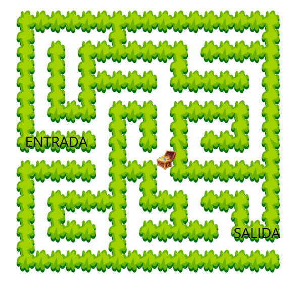

Robot Explorador
Objetivo: Introducir a los docentes en conceptos básicos de robótica mediante la programación de un robot virtual en MBlock que simule la exploración de un entorno.
Instrucciones:
Seleccionar o crear un robot.
Diseñar un escenario que represente un entorno que el robot debe explorar, incluyendo obstáculos, caminos como el laberinto.
El robot debe moverse por el escenario utilizando bloques de movimiento. Debe ser capaz de:
Moverse hacia adelante y girar en diferentes direcciones (derecha o izquierda).
Detectar obstáculos y cambiar de dirección si se encuentra con el mismo.
Utilizar bloques de control para implementar la lógica de exploración.
Si el robot se encuentra con un obstáculo, debe girar (opcional) grados y seguir adelante.
Si llega a un área de interés, debe detenerse y mostrar un mensaje (por ejemplo, "¡He encontrado algo interesante!" o he llegado a mi destino.)
Requisitos:
Como elementos mínimos el programa debe incluir bloques de: variables, bloques de control, bloques de entrada/salida.
Al iniciar el programa, el robot debe comenzar en una posición inicial y moverse aleatoriamente por el escenario.
Cada vez que el robot se mueve, incrementa la variable pasos.
Si el robot encuentra un obstáculo, debe girar y continuar explorando.
Al final de la exploración, muestra el total de pasos que el robot ha realizado.
Ejemplo

Fuente: elaboración propia.